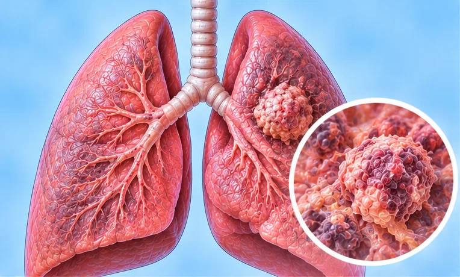

Central lung cancer
Lung cancer that starts in the large airways near the middle of the chest
What it is
Central lung cancer begins in the larger airways close to the centre of the chest. It can cause cough and breathing problems. Your cancer team guides your care.
- Large airways, middle of chest
- More often in smokers
- Cough, breathless
- Which doctor
- Lung specialist (respiratory physician), cancer doctor
- Common in
- Mostly adults; smokers and past smokers
- Contagious
- No
- Course
- Varies from person to person; your cancer team can explain
Common signs

Dry, tickly coughDry cough 
Cough with phlegmProductive cough 
Wheezing breathWheeze 
Short of breath on stairsExertional dyspnoea 
Tight, heavy chestChest tightness 
Losing weight without tryingUnintentional weight loss
Why it happens

SmokingTobacco use 
Smoke, haze and strong smellsAirborne irritants 
Dust or chemicals at workOccupational exposure
Other causes
- A family history; sometimes people who never smoked get it too
See a doctor first if
- Severe trouble breathing, or sudden chest pain: call 999
- Coughing up blood: go to hospital now
- A cough that lasts more than a few weeks or changes
- Chest infections that keep coming back
- Losing weight without trying, or a hoarse voice that does not go away
- Swelling of the face or neck
If any apply, please see a doctor before a session.
This page is general information. Please keep taking your normal medicine and keep seeing your doctor.
Keep taking your normal medicine and keep seeing your doctor. Our session is a gentle support and does not replace medical care.
Looking after yourself

Follow your care team's planSpecialist follow-up 
Talk to family and friendsSocial support
More ways to look after yourself
- If you smoke, ask for help to stop; stay away from smoke
- Pace yourself and rest between tasks; breathe slowly through the nose
- Tell your team about breathlessness, pain or poor appetite
Tell your therapist
- Cancer or cancer treatment
- A heart condition
- Blood-thinning medicine
- Pacemaker or metal implant
Your therapist will go through this with you before starting.
Questions and answers
What is Central lung cancer?
Lung cancer that starts in the large airways near the middle of the chest. Central lung cancer begins in the larger airways close to the centre of the chest. It can cause cough and breathing problems. Your cancer team guides your care.
What are the common signs of Central lung cancer?
Dry, tickly cough · Cough with phlegm · Wheezing breath · Short of breath on stairs · Tight, heavy chest · Losing weight without trying
Why does Central lung cancer happen?
Smoking · Smoke, haze and strong smells · Dust or chemicals at work
How can I look after myself with Central lung cancer?
Follow your care team's plan · Talk to family and friends
Can an AI Body Master session help with Central lung cancer?
A session is gentle, needle-free meridian support for your wellbeing. It does not treat or cure Central lung cancer and never replaces your medicine or your doctor. Tell your therapist about it before the session starts.
Related conditions
References: General information based on public health sources such as Mayo Clinic, NHS, Cleveland Clinic and NCBI StatPearls.
Page updated: 2026-11-01